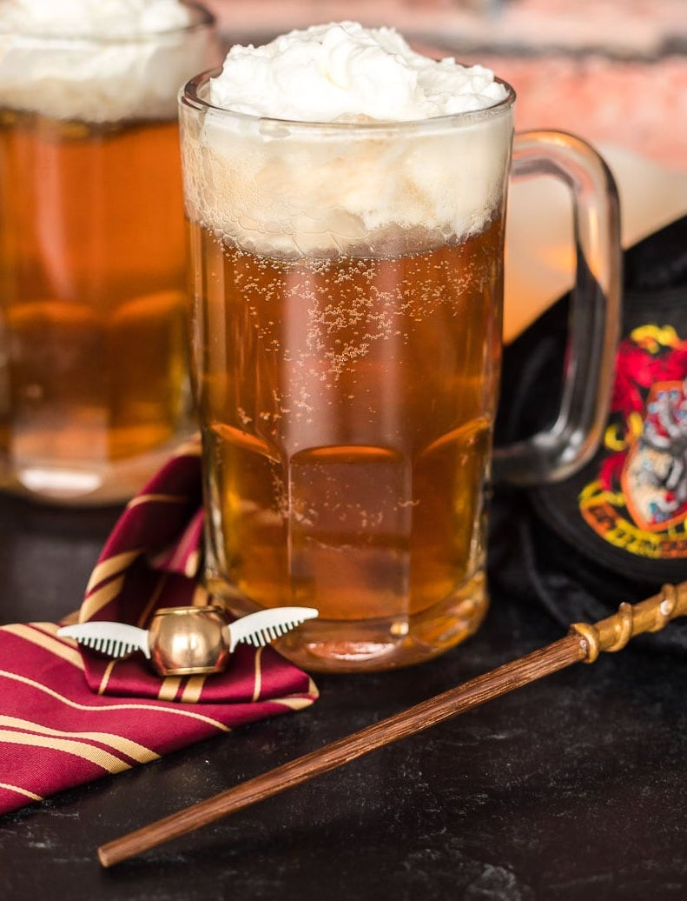

Ingredients
- 3 pints or 1.5 liters real ale
- 1 inch fresh grated ginger
- half a teaspoon grated nutmeg
- 6 cloves
- 255 grams demerara sugar
- 5 egg yolks
- 100 grams butter
- extra nutmeg as garnish
Description
There's something so darn Chistmassy about the Harry Potter films, particularly the first few, that I always thought of them as Christmas Movies, even though maybe they're not. Well I'm kicking off this holiday season with a hot mug of cheer with this 1588 recipe for Butterbeer.
Recipe credits:
Steps
- Pour up all 3 pints of ale.
- Grate 1 inch fresh of ginger.
- Grate .5 teaspoon of nutmeg.
- Add 6 cloves.
- Heat mixture to a low simmer.
- Set a separate bowl and beat together 255 grams of demerara sugar and 5 egg yolks.
- Combine egg and sugar mixture with ale mixture.
- Melt in 100 grams of butter.
- Serve in a mug and garnish with nutmeg.